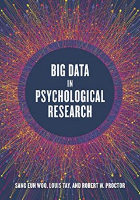

Louis Tay
William C. Byham Chair in Industrial-Organizational Psychology, Purdue University
How do people thrive, and how do we measure it well enough to know?
I study how people thrive—developing rigorous measurement methods to capture well-being in all its complexity, and exploring how AI can enhance human flourishing. My work bridges psychological science, advanced psychometrics, and emerging technology.
I direct the WAM Lab, co-founded ExpiWell, coordinate Purdue's Industrial-Organizational Psychology program, and lead Florea.AI—a John Templeton Foundation project developing virtue-centered AI conversational agents.
- Well-Being Science
- Psychometrics
- AI & Mental Health
- AI Bias & Fairness
- Character
- Machine Learning
- Experience Sampling
Leadership
A lab, a research platform, a top-ranked doctoral program, and a foundation-funded AI project.
WAM Lab
Well-Being, AI, and Measurement Lab at Purdue University
Cross-disciplinary research combining well-being science, advanced measurement methods, and AI applications. We develop tools and frameworks that advance how researchers study human flourishing.
- AI bias detection and measurement frameworks
- Workplace well-being and sustainable careers
- Character strengths and human flourishing
- Psychometric methods and scale development
ExpiWell
The leading platform for ecological momentary assessment and experience sampling research. ExpiWell empowers researchers to capture real-time data on thoughts, feelings, and behaviors as they unfold in daily life.
Explore ExpiWellPurdue Industrial-Organizational Psychology
One of the world's premier Industrial-Organizational Psychology doctoral programs. We train the next generation of scientists and practitioners to tackle critical challenges in work, organizations, and human performance.
- Broad faculty expertise: measurement, personality, selection, teams, leadership, well-being, motivation, human-AI collaboration
- Strong placement record in academia and industry
- Collaborative, supportive training environment
- Cutting-edge research on AI, big data, and the future of work
Florea.AI
Developing virtue-centered AI conversational agents that support human flourishing. This research explores how AI can be designed to cultivate character strengths and promote well-being through meaningful dialogue.
- AI agents grounded in virtue ethics and character science
- Therapeutic conversation assessment frameworks
- Reporting guidelines for AI conversational agents
- Cross-disciplinary collaboration across psychology, philosophy, and computer science
Papers, explained in about three minutes
Short, plain-language video explainers of research from the WAM Lab and collaborators, on AI bias, measurement, well-being, and work.Scripts, visuals, and narration are AI-assisted and checked against each paper. The narrator is a synthetic voice.
Machine-Learning Measurement Bias
When an AI scores people, it is doing measurement. This series asks what bias in AI assessment really is, where it comes from, and why fixing it involves hard trade-offs.
 3:24
Part 1Different Outputs Aren't Always BiasWhy different average scores for different groups are not necessarily bias, and why equal averages don't prove there is none.
3:24
Part 1Different Outputs Aren't Always BiasWhy different average scores for different groups are not necessarily bias, and why equal averages don't prove there is none.
 4:09
Part 2Where Does AI Bias Come From?A psychometric lens on AI assessment: bias can enter through the ground truth, the platform, behavior, computed features and the algorithm itself.
4:09
Part 2Where Does AI Bias Come From?A psychometric lens on AI assessment: bias can enter through the ground truth, the platform, behavior, computed features and the algorithm itself.
 2:15
Part 3The Hard Trade-offs of Fixing AI BiasSeparate models per group? Leaving out race and gender? Why neither is a simple fix, plus four questions to ask before using a model to assess people.
2:15
Part 3The Hard Trade-offs of Fixing AI BiasSeparate models per group? Leaving out race and gender? Why neither is a simple fix, plus four questions to ask before using a model to assess people.
 2:56
2:56
Critical Thinking in AI Use Is Three Skills, Not One
Verify, understand, reflect: a 13-item scale built across six studies with 1,341 people, and why each part matters on its own.
 3:04
3:04
Is AI Good for Workers?
An occupational health psychology agenda for aligning AI with worker safety, health and well-being, from stress to job insecurity.
 3:09
3:09
Does Where You Live Shape Your Well-Being?
Gallup data on 1.6 million people in 154 countries: about one-fifth of the differences in life satisfaction are tied to country.
 3:09
3:09
Would AI Hear Them the Same Way?
How age shapes what people say in AI-scored video interviews, and how LLM personas can help design fairer questions.
 3:39
3:39
Does Dropping the SAT Remove Bias?
Bias versus score gaps: what the research says about standardized testing and going test-optional.
 3:45
3:45
Can Others Tell If You're Being Authentic?
Feeling authentic is not the same as looking authentic. What AI analysis of job interviews found.
 4:16
4:16
Why Don't We Ask for Help?
The five HELPS beliefs that decide whether people reach out for help, and how to measure them.
 3:36
3:36
The 7 Dimensions of Psychological Situations
Psychology has the Big Five for people. The CAPTION model maps the situations people are in.
No explainers in this topic yet.
Shorts · 24 one-idea clips
 Is critical thinking about AI one skill?
Is critical thinking about AI one skill?
 Does your country shape your happiness?
Does your country shape your happiness?
 Whose interests should AI at work serve?
Whose interests should AI at work serve?
 AI is fluent and confident, even when wrong
AI is fluent and confident, even when wrong
 What should governments measure for well-being?
What should governments measure for well-being?
 Is AI making work more stressful?
Is AI making work more stressful?
 Can you measure critical thinking in AI use?
Can you measure critical thinking in AI use?
 Life satisfaction: country or county?
Life satisfaction: country or county?
 Will AI take your job?
Will AI take your job?
 Would AI hear a 25- and a 55-year-old the same way?
Would AI hear a 25- and a 55-year-old the same way?
 Testing interview questions on AI personas first
Testing interview questions on AI personas first
 Different, not decline: age and AI interviews
Different, not decline: age and AI interviews
 Is the SAT biased? Bias vs. a score gap
Is the SAT biased? Bias vs. a score gap
 If colleges drop the SAT, what's left?
If colleges drop the SAT, what's left?
 Can a standardized test level the playing field?
Can a standardized test level the playing field?
 Can anyone tell if you're being yourself?
Can anyone tell if you're being yourself?
 Feeling authentic ≠ looking authentic
Feeling authentic ≠ looking authentic
 Want to seem authentic in a job interview?
Want to seem authentic in a job interview?
 Why don't people ask for help? 5 beliefs that decide
Why don't people ask for help? 5 beliefs that decide
 Knowing help is useful isn't enough
Knowing help is useful isn't enough
 Is asking for help a sign of weakness?
Is asking for help a sign of weakness?
 Psychology has the Big Five for people. What about situations?
Psychology has the Big Five for people. What about situations?
 The 7 dimensions of situations: which one describes your day?
The 7 dimensions of situations: which one describes your day?
 146.7 billion words were used to test a map of situations
146.7 billion words were used to test a map of situations
Talks


Tools & resources
Free and open resources from our research program.
Selected books

Big Data in Psychological ResearchAPA Books Handbook of Well-BeingDEF Publishers Handbook of Positive Psychology AssessmentHogrefe Oxford Handbook of the Positive HumanitiesOxford University Press Technology and Measurement around the GlobeCambridge University PressRecent writing
Collaborations, talks, and students
Department of Psychological Sciences, Purdue University